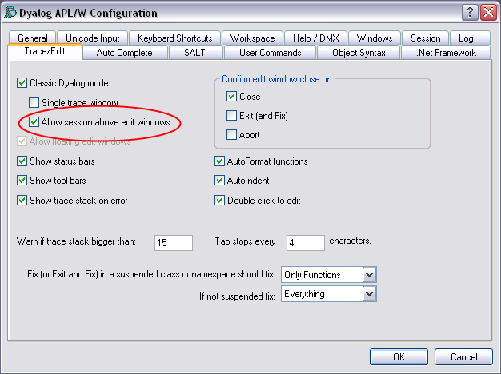

Dyalog APL Version 13.2 provides the following miscellaneous enhancements and changes:
Component files that are exclusively tied were not previously reported by ⎕FLIB. In Version 13.2 they are included in the result.
From Version 13.2 onwards, support for the APL_FHIST_TIE parameter has been removed. Component file tie time is not recorded and ⎕FHIST always reports 0 for user ID and time in the 4th row of its result.
⎕PROFILE'data' and ⎕PROFILE'tree' have been enhanced to take an optional left argument specifying which columns of data to return.
0 ⎕SAVE wsid no longer fails with DOMAIN ERROR if there are threads running or Edit/Trace windows open. These restrictions continue to apply to monadic ⎕SAVE and )SAVE.
)SAVE and ⎕SAVE now insist that you explicitly specify a filename. Previously if you specified just the name of a directory, the workspace was saved with the name .DWS.
Windows allows users to control the visibility of keyboard shortcuts.
Under Windows XP this is done from the Display Properties dialog box. Select the Appearance tab, then click the Effects button. Then select or clear the option labelled Hide underlined letters for keyboard navigation until I press the Alt key.
In Windows 7, open Control Panel / Ease of Access Center / Make the Keyboard easier to use.The option is labelled Underline keyboard shortcuts and access keys
The Dyalog APL GUI now honours this option. This means that the underscores in the captions of certain objects, including Label, MenuItem and Button objects, may or may not be shown until the user presses the Alt key.
Note that the actual behaviour obtained by the option is controlled by Windows and not by Dyalog.
In Classic Dyalog mode, it is now possible to specify whether or not the Session window may appear on top of Edit and Trace windows. To enable this setting, check the option box as shown in the picture below.

The Find Objects dialog box now saves all your option settings between invocations and between APL sessions.
In Version 13.2, these methods are implemented using GDI+. This means that MakeGIF now generates compressed GIF files. In previous versions it generated uncompressed GIFs.
In previous versions of Dyalog APL the Find/Replace window was dockable. However, the resulting Window was in general unusable, with many of the fields and buttons not visible. In Version 13.2 the Find/Replace window is no longer dockable.